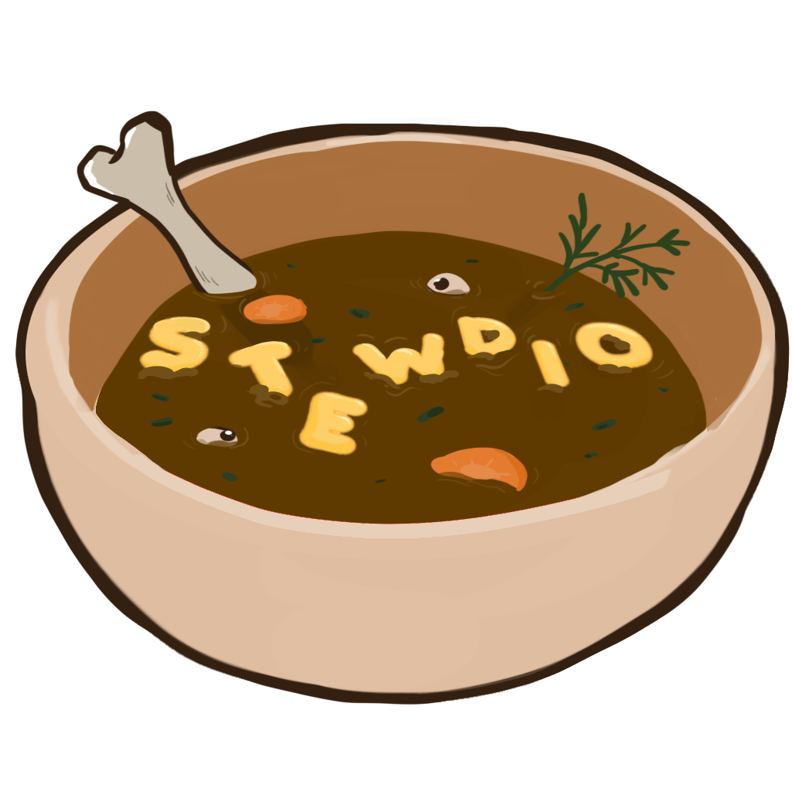

Summary
- Call of Dinner is a First-Person, cooking simulator with violent vegetable massacre and crazy cooking! Control the unnamed protagonist and protect yourself from murderous fruits and vegetables while preparing succulent meals for your customers to enjoy!
| Purpose | Duration | Responsibilities | Platform | Engine |
|---|---|---|---|---|
| Student Project 1 @ Playgroundsquad | 6 Weeks | Gameplay, Workflow & UI | PC | Unreal Engine 5 |
Contribution & Reflection
 In Call of Dinner I was responsible for Gameplay & UI Design. Most of the time was spent learning the engine and development cycle. Only being two designers meant that both me and Emma had to be very generalist in this project.
UI & Feedback - Most of my work went into making sure that the UI of the game clearly conveyed all the neccessary information while still keeping the screen free of clutter. One of the hardest pieces of feedback was when you got hit or hit an enemy. After many iterations we figured out that sounds were the most impactful way of doing this without cluttering the screen. This lead to the melee attack to get a distinct sound on-hit and the player getting a red flash whenever they would take damage.
Speed & time - I spent a lot of time playtesting the game to make sure that the enemies would spawn fast enough to ensure there's always a threat, but not fast enough to make it so that the player is overwhelmed. The reception of playtesters have been that this balance incites certain stress without making the game unbeatable which aligned with our design vision.
Miscellaneous - As we spent a lot of time doing bits of everything I also ended up making some VFX for the game in the form of smoke and a muzzleflash. Organizing the GDD and acting as mediator between the different disciplines.

Credits
| Art | Design | Programming |
|---|---|---|
| Daniel Edström | Calle Wahlstedt Nilsson | Albin Brattlöf |
| Kade Gibson | Emma Tethrain | Gustav Domeij |
| Kielo MIllner | Linus Lekselius | |
| Loke Öhrström | ||
| Wille Evensson |